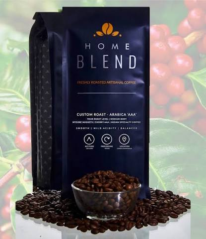
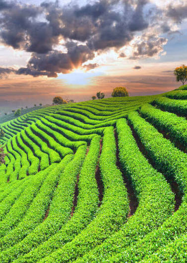
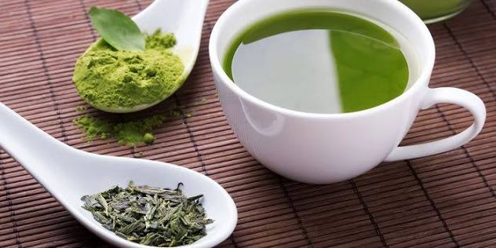
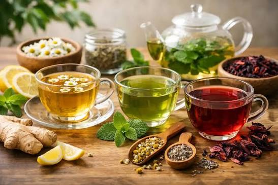

Arabica Coffee Beans
Our Arabica coffee beans are sourced from the finest coffee-growing regions, known for their smooth and rich flavor profiles. Perfect for those who appreciate a balanced cup of coffee.
We offer a wide variety of high-quality coffee beans and blends, carefully and curated range of freshly roasted blends from our roastery

Our Arabica coffee beans are sourced from the finest coffee-growing regions, known for their smooth and rich flavor profiles. Perfect for those who appreciate a balanced cup of coffee.
Our Robusta coffee beans are known for their bold and robust flavor, making them ideal for espresso and strong coffee lovers. They provide a higher caffeine content and a distinctive taste.
Our espresso blends are meticulously crafted to deliver the perfect balance of flavor and aroma, with a bitterseet taste. Ensuring a rich and satisfying shot every time.
Our tea selection ranges from traditional black teas to refreshing green teas and herbal infusions sourceed from the finest tea plantations.

Our Kenyan black tea provides a rich aroma and refreshing taste, grown in the highlands of Kenya.
Our green tea is known for its delicate flavor and numerous health benefits, sourced from the finest tea gardens.

Our herbal infusions are caffeine-free herbal blends known for their soothing, calming properties, perfect for a relaxing moment and unwinding.
